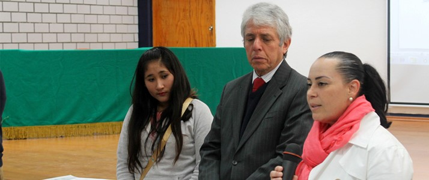
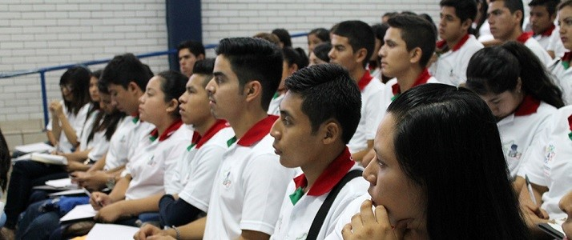
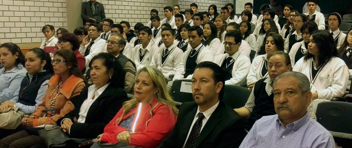
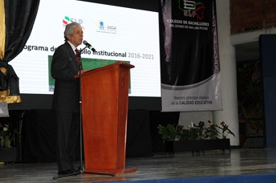

En el marco de la XXXIII Muestra Cívica y Deportiva del Colegio de Bachilleres del Estado de San Luis Potosí, se lleva a cabo la reunión de alumnos y alumnas Concejales de los 69 planteles de la entidad donde se abordan asuntos de interés estudiantil y reciben información de utilidad para liderar con propósito a sus compañeros estudiantes.
La agenda de trabajo incluye temas diversos, uno de los principales refiere a la protección de los Derechos Humanos en donde la Lic. Azalea Martínez Navarro Capacitadora Certificada de la Comisión de Derechos Humanos compartió experiencias con los estudiantes y propuso estrategias para construir un entorno escolar donde se respeten las garantías y los derechos elementales de la comunidad escolar, para el Cobach es una prioridad garantizar la protección de los y las alumnas por lo que en el marco de un convenio firmado con la Comisión, se trabajan acciones concretas para garantizar el bienestar de los alumnos.
Otro de los temas abordados en la agenda de trabajo de los alumnos concejales es la participación de la Subprocuradora de delitos sexuales de la Procuraduría de Justicia en el Estado Magdalena González Vega, quien expuso los programas y protocolos de seguridad que se siguen para proteger la integridad física y emocional de los estudiantes, el entorno escolar requiere una serie de acciones para garantizar un ambiente seguro alejado de prácticas de riesgo a los alumnos por lo que resulta fundamental que los estudiantes líderes de cada plantel sean portavoces de acciones concretas en beneficio de los alumnos.
El tema de liderazgo lo abordó el Dr. José Luis Ortiz Rosales docente del Tecnológico de Monterrey, en su ponencia hablóde los diferentes conceptos de liderazgo a nivel grupal e individual con la finalidad de determinar los factores que mejor nos ayuden en la creación de líderes en el futuro en un ambiente de cambios constantes, reiterando que un líder es un modelo de servicio, y está en ustedes en transformar su persona y su entorno inmediato para un mejor país.
La sesión de trabajo fue encabezada por el Director General del Colegio de Bachilleres Amado Vega Robledo quien ha mantenido una comunicación abierta con la comunidad estudiantil quien constituye el elemento clave para la Institución. Vega Robledo comentó que construir liderazgos estudiantiles sólidos, significa formar líderes honestos y conscientes para un futuro próximo.
Los trabajos cerraron con una mesa de diálogo donde los propios concejales definieron líneas de acción para beneficiar a sus compañeros.

En el marco de la LXI Legislatura del Congreso del Estado se llevará a cabo el Parlamento de la Juventud 2016, en el que participaran 27 estudiantes del Colegio de Bachilleres del Estado de San Luis Potosí que representarán a los 15 diputados locales de mayoría relativa de igual número de distritos locales y 12 diputados de representación proporcional que integran el Poder Legislativo.
Los jóvenes que conformarán este Parlamento de la Juventud recibirán un curso de capacitación por parte del Instituto de Investigaciones Legislativas a fin de conformar los órganos de dirección de la sesión, como es el caso de la Directiva que llevará a cabo los trabajos, así como la presentación de sus propuestas.
El Parlamento de la Juventud 2016 tiene por objeto el promover la participación de las y los jóvenes potosinos, mediante propuestas que incidan en la agenda legislativa y que la comunidad juvenil del Estado por tanto, pueda ser tomada en cuenta por las y los integrantes del Congreso del Estado en sus trabajos de orden legislativo sea en comisiones como en pleno.
Cabe resaltar que los participantes harán uso de la tribuna legislativa presentando en sus ensayos distintas propuestas sobre temas que les preocupan e interesan a la sociedad como: seguridad, alimentación, educación, nutrición, contaminación, libertad de expresión, reforma educativa y turismo, entre otros aspectos.
Para la elección de los participantes, el Consejo Estatal Electoral y de Participación Ciudadana se encargó de la organización del proceso de elección de los participantes, en base a la presentación de sus propuestas, mismas que fueron evaluadas por el comité organizador, eligiendo un máximo de tres participantes por distrito electoral estatal.
El desarrollo de los trabajos del Parlamento de la Juventud se realizará durante los días 15 y 16 de diciembre, en las que los integrantes desarrollarán el documento final denominado: La Agenda Legislativa desde la Juventud 2016, a partir de las propuestas con las que participaron en el proceso de selección.
El Parlamento de la Juventud año 2016 se llevará a cabo este viernes 16 de diciembre en punto de las 9:00 horas, en el salón del pleno "Ponciano Arriaga Leija".

Proteger la integridad y la salud de los y las estudiantes es uno de los principales retos que enfrenta el Colegio de Bachilleres en el Estado y es que en medio de un ambiente social violento es fácil que los conflictos que suceden en las calles puedan brincar al entorno escolar, por ello resulta fundamental definir acciones que contribuyan al bienestar de la comunidad escolar.
El Director General del Colegio de Bachilleres Dr. Amado Felipe Vega Robledo mantiene una estrategia de colaboración con diversas Instituciones para promover una cultura de protección en el entorno escolar. Por ello existen acciones coordinadas con la Comisión Estatal de Derechos Humanos con las Instituciones que combaten las adicciones y con las autoridades de Seguridad Pública.
Esta esta ocasión, el Plantel 28 del COBACH ubicado en Concepción Macías s/n Graciano Sánchez, fue sede de la jornada ¿Drogas? ¡Mejor Infórmate! Que organiza la red de Instituciones Educativas para la prevención de las adicciones en la que participa el COBACH y el Centro de Integración Juvenil.
El evento se apoya en talleres y conferencias que brindan al alumno información seria y precisa sobre el tema de las adicciones.
La comunidad escolar del Plantel 28 COBACH rebasa los dos mil alumnos, por lo que estas acciones tienen un alto impacto en los estudiantes y en sus familias.
El uso de sustancias adictivas constituye un complejo fenómeno que tiene repercusiones en la salud, en la integración familiar y en el desarrollo y estabilidad social por ello es un compromiso de la institución impulsar programas que orienten e informen a los jóvenes de los graves riesgos que implica el consumo de sustancias peligrosas y cuenten con elementos para tomar decisiones adecuadas. Dada la importancia del tema el Director General Amado Vega Robledo hizo un llamado a profesores y padres de familia para hacer un frente común que vigilen y protejan a los jóvenes de las adicciones uno de los problemas que enfrentan la sociedad y en especial la juventud.

Una educación con equidad y pertinencia, son hoy algunos de los retos del subsistema Educativo Nacional, y el Colegio de Bachilleres del estado de S.L.P., lo sabe, es por ello que en un ejercicio consensuado con la comunidad escolar y bajo una metodología con rigor científico, elaboro el plan de Desarrollo Institucional 2016-2021 que tiene como misión ofrecer una Educación Media Superior de calidad activa e incluyente; con enfoque humano comprometida con los jóvenes potosinos en su formación integral y el desarrollo pleno de sus competencias.
Con este documento articulado de la mano de quienes integran la institución, el Colegio afina su visión hacia el 2021, ser reconocida como Institución Certificada en el Sistema Nacional de Bachillerato, a través de procesos educativos de calidad, en una vinculación con los padres de familia, el gobierno y la sociedad.
Contando con el aval de Gobernado del Estado Juan Manuel Careras López y el secretario de Educación de Gobierno del Estado Ing. Joel Ramírez Díaz, el Dr. Amado Felipe Vega Robledo Director General del Colegio de Bachilleres presenta a la comunidad escolar del Cobach, el programa de Desarrollo Institucional 2016-2021 en el Plantel 01 Soledad, municipio de Soledad de Graciano Sánchez.
De esta manera, el COBACH delinea acciones para un aprovechamiento óptimo de sus recursos disponibles, las demandas sociales se multiplican por lo que hoy más que nunca surge la necesidad de acciones más eficaces y eficientes, alcanzar los objetivos trazados con el menor costo posible gracias a mecanismos que permitan mejor distribución, utilización y administración de los recursos.
Y en que a partir de esta nueva filosofía, el Colegio de Bachilleres en el estado replantea su ruta de acciones para construir un espacio educativo de alto impacto para la sociedad.
Esta confluencia reflexiva confirma lo importante de analizar de manera continua los objetivos que se persiguen sobre todo aquel de garantizar una educación de calidad, por lo que el documento elaborado tiene bases sólidas con valores como el humanismo, el compromiso y la creatividad.
Según cifras del Instituto Nacional de Evaluación Educativa, 45 por ciento de los jóvenes de 17 años no van a la escuela, lo que refleja las grandes fisuras de la educación media superior, es por ello que el plan de Desarrollo Institucional 2016-2021 del Colegio de Bachilleres, plantea estrategias claras para mejorar componentes como planes y programas, equipamiento de planteles, formación y educación docente, todo ello con el ánimo de reforzar la formación académica de los más de 32,000 mil estudiantes que conforman el subsistema.
El evento asistieron, Secretarios de Estado, Directores Generales, Rectores de Universidades, Diputados locales, Organismos descentralizados, Representantes de las distintas cámaras industriales, quienes mostraron su respaldo para fortalecer los trabajos del Colegio.
La calidad educativa, es entendida en el Colegio de Bachilleres del Estado de San Luis Potosí, como una positiva línea de congruencia entre el logro de los objetivos, resultados y procesos alineados con acciones que atiendan las demandas sociales con pertenecía y calidad.